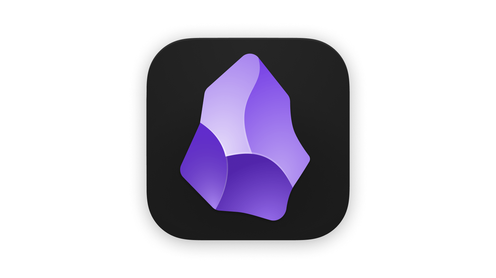
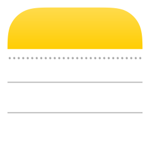
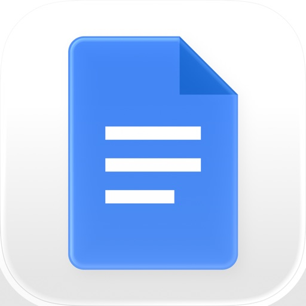

AI Writing Workspace
Wivlo
必要な情報を探しながら、
文書を完成させる。
ノートや外部サービスの情報をEditorの文脈として使い、AIとの共同編集と委任を一つの作業空間で行うプロダクトです。

01 / Overview
ノートを増やすのではなく、
既存の知識から成果物を作る。
企画書、リサーチ、会議資料、ブログなどを作るとき、必要な情報を探す作業と書く作業が分断されます。WivloではEditorを中心に、ReferenceとAI Agentを同じ作業フローへ統合しました。
02 / Problem
書く前に、過去の情報を
探し直していた。
保存した場所やタイトルを忘れるだけでなく、その記録が存在したこと自体も忘れます。結果として、同じ内容をもう一度調べ、似た文書を繰り返し作っていました。
どのサービス、どのプロジェクト、どのノートに保存したかを先に思い出す必要がある。
従来のキーワード検索では、過去に使った表現を覚えていないと候補を絞りにくい。
過去の成果物を見つけられず、調査や構成から似た作業を繰り返す。
回答を得ても、根拠の確認と文書への反映は別の画面と操作になる。
03 / Research & Insight
比較したのは機能数ではなく、
再利用までに残る作業。
記録、接続、共同編集、AI検索にはそれぞれ強いツールがあります。一方で、複数の情報を根拠として新しい文書へ変える工程は、ユーザー側に残っていました。
情報を構造化できるが、複数ページの探索と統合は手作業。

Obsidian知識を接続できるが、LinkとPropertyの維持が必要。

Apple Notes記録は速いが、蓄積後の再利用は検索に依存。

Google Docs共同編集に強いが、過去文書の再構成は別作業。
AI検索はできるが、検索結果と現在の執筆範囲が分かれる。
Initial question
→どうすればノートを自動で整理できるか。
Explored知識の状態や接続を可視化する案も検討した。
Core insight
ボトルネックは保存ではなく、既存の知識を使って成果物を作る工程にある。
04 / Product Strategy
Note Appから、
Writing Workspaceへ。
情報の保存量や接続数を価値にせず、ユーザーが最終的に完成させたい文書を中心に製品の範囲を決め直しました。
記録と自動整理が中心。既存ノートアプリとの差が機能単位に留まる。
検索と再利用へ拡張。ただし、成果物を作る場所がまだ曖昧だった。
Editorを中心に、Source、AI、Reviewを一つの作業として設計。
Editor first
検索やChatではなく、文書を完成させる画面をプロダクトの中心に置く。
Sources beside writing
必要な原文を探し、Previewし、引用する操作をEditorの隣に置く。
AI proposes, user decides
AIは候補と作業結果を示し、適用と最終判断はユーザーに残す。
05 / Core Experience
Co-writeするときも、
Delegateするときも同じ文脈を使う。
短い修正はEditor内で共同編集し、調査や長い初稿はAgentへ委任します。二つのモードがCurrent document、Project、外部Sourceを共有するように設計しました。
Product brief@ Reference
Notion、Slack、Drive、Wivlo内の記録を検索し、Previewした内容だけを挿入・引用する。
- Understanding
- Finding context
- Drafting
- Checking claims
Review ready3 sections revised
7 sources · +428 words
調査、初稿、根拠確認を別のWriting Runとして処理し、変更理由とSourceを確認してから採用する。
Writing context Wivlo
Wivlo
Notion
Slack
Drive
06 / AI Interaction Design
AIが動く条件と、
人が判断する境界を設計する。
AI機能を一つのボタンとして扱わず、Intentの理解、Context探索、Sourceの順位付け、生成、引用、Reviewまでを連続したInteractionとして定義しました。
関連候補の探索、初稿、変更案、Source候補、作業進行。
参照範囲、適用する変更、曖昧な判断、最終表現、公開。
原文を自動上書きせず、変更内容と根拠をReview可能な状態にする。
離脱後の復帰 Writing Runは作業段階を記録し、完了後はSummary、変更量、Reference数を表示します。ユーザーは会話を最初から読み直さず、Reviewから再開できます。
07 / Key Interfaces
機能一覧ではなく、
判断が起きる画面だけを残す。
DesktopではEditorとSourceの比較、Mobileでは記録と検索を優先しました。同じデータを使いながら、作業環境に合わせて操作密度を変えています。


08 / Design Decisions
AIの存在感より、
執筆の主導権を優先した。
AIを目立たせるほど価値が伝わるとは限りません。書く、根拠を確かめる、変更を採用するという判断がユーザー側に残るようにInteractionを調整しました。
Instead of
→AI Chatを主画面にする
DecisionEditorを中心に、AIをSide Panelへ置く
Instead of
→生成結果で原文を置き換える
Decision変更理由とSourceを確認して適用する
Instead of
→すべての接続を同じLinkにする
Decision派生するBranchと参照するLinkを分ける
09 / Designer to Builder
設計判断を、動く製品まで
自分でつなげた。
1人でProduct Strategy、UX/UI、AIの実行条件、データ構造、Web/iOS実装、QA、配信を担当しました。開発は技術の展示ではなく、Interactionの仮説を実際に検証する手段として扱いました。
Frame→Design→Prototype→Build→QA→Release↺
Next.jsReactExpoSupabaseOpenAIVercelApp StoreCodex-assisted development
10 / Launch & Learnings
リリース後は、
プロダクトと獲得を同時に検証する。
WebとiOSを公開し、現在は初期ユーザー獲得の段階です。利用成果を断定せず、製品内の行動データと流入経路を計測できる状態を整えています。
Editor、Reference、AI workflow、Mobile captureと検索を公開。
検索意図に対応する記事と製品情報を継続的に公開。
ターゲットと訴求軸を検証するための初期流入を作る。
初回文書作成、AI変更の適用、継続利用を今後検証する。
AI Writingの価値は、文章を自動生成することではなく、必要な根拠を探す負担を減らし、人が書くことに集中できる状態を作ることにある。
公開ユーザー数、Retention、成果指標は未掲載です。実装済みの機能と、現在検証中の獲得施策を分けて記載しています。